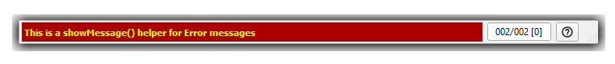
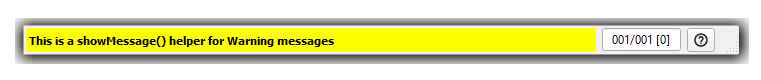
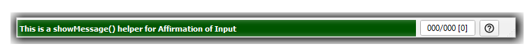

API¶
Class PyQtMessageBar¶
This messagebar subclasses the standard Qt QStatusbar and provides a drop-in replacement for QStatusBar.
See the Introduction section for a high-level review of PyQtMessageBar features.
LOGGING¶
This module creates a logging handler named ‘PyQtMessageBar’ and always configures a Null handler.
See Configuring Logging for a Library.
References
- The following Qt references proved helpful:
LICENSE GPL¶
This file is part of PyQtMessageBar.
PyQtMessageBar is free software: you can redistribute it and/or modify it under the terms of the GNU General Public License as published by the Free Software Foundation, either version 3 of the License, or (at your option) any later version.
PyQtMessageBar is distributed in the hope that it will be useful, but WITHOUT ANY WARRANTY; without even the implied warranty of MERCHANTABILITY or FITNESS FOR A PARTICULAR PURPOSE. See the GNU General Public License for more details.
You should have received a copy of the GNU General Public License along with PyQtMessageBar in the file named LICENSE. If not, see <https://www.gnu.org/licenses/>.
COPYRIGHT (C) 2020 E.R. Uber (eruber@gmail.com)
USAGE¶
You use PyQtMessageBar in your code just like you would use QStatusBar, it just can have a bit more going on with its constructor call. But here we show the simplest usage:
from PyQt5.Qt import Qt
from pyqtmessagebar import PyQtMessageBar
...
# Note that the root 'self' shown here is typically an earlier
# instantiated QMainWindow
# The least complex constructor signature -- every parameter has a default value
self.statusbar = PyQtMessageBar()
# In order for keyboard input to work with a PyQtMessageBar object, the focus
# must be properly set
self.statusbar.setFocusPolicy(Qt.StrongFocus)
self.setFocusProxy(self.statusbar)
# This actually attaches the ByQtMessageBar to the QMainWindow
self.setStatusBar(statusbar)
PyQtMessageBar Details¶
-
class
pyqtmessagebar.__init__.PyQtMessageBar(parent=None, msg_buffer_size=100, enable_separators=False, help_icon_file=None, built_in_help_icon='Light', parent_logger_name=None, save_msg_buffer_dir=None, timer_wait_q_emptied_signal=None)[source]¶ Bases:
PyQt5.QtWidgets.QStatusBar-
__init__(parent=None, msg_buffer_size=100, enable_separators=False, help_icon_file=None, built_in_help_icon='Light', parent_logger_name=None, save_msg_buffer_dir=None, timer_wait_q_emptied_signal=None)[source]¶ Constructor for the PyQtMessageBar class which subclasses QStatusBar.
See Qt’s QStatusBar Documentation.
It adds a buffered message index which includes a wait queue depth and it adds a messagebar help icon.
- Parameters
parent (qtwidget, optional) – Reference to this widget’s parent widget
msg_buffer_size (int, optional) – The number of messages to buffer before removing the oldest
enable_separators (bool, optional) – If True, any addPermanentWidget() calls will include a vertical separator to the left of the widget added.
help_icon_file (str, optional) – If specified, this file should be a 24x24 pixel image file to be used to replace the built-in help icon image. If specified, this icon will have prescedence over any built-in icon.
built_in_help_icon (str, optional) – This is a string constant that can be one of three values ‘Light’, ‘Dark’, ‘Two’. Use the module constants BUILT_IN_HELP_ICON_LIGHT, BUILT_IN_HELP_ICON_DARK, or BUILT_IN_HELP_ICON_TWO_TONE.
save_msg_buffer_dir (str, optional) – A directory where any saved message buffers will be written to. If specified as None, then saving the message buffer will be disabled.
timer_wait_q_emptied_signal (WaitQueueEmptiedSignal object, optional) – Provides a custom signal and allows user to connect their own slot method to the timer wait queue becoming empty. See WaitQueueEmptiedSignal USAGE for a code example of how to set this signal up.
-
setProgressBarColor(color_text)[source]¶ Sets the color of the countdown timer progress bar to the color value specified by color_text.
Note that color_text can be any color representation supported by the colour package.
-
clearMessage()[source]¶ This method added to distinguish clearing (or removing) the currently displayed message and removing some other custom widget that the user may have added.
-
showMessageError(msg)[source]¶ This is a helper method that serves as a short-hand call to showMessage() that configures the message to be an error message which looks like:
Yellow FG, Brick Red BG, Bold Text, No Timeout
-
showMessageWarning(msg)[source]¶ This is a helper method that serves as a short-hand call to showMessage() that configures the message to be an warning message which looks like:
Black FG, Yellow BG, Bold Text, No Timeout
-
showMessageAskForInput(msg)[source]¶ his is a helper method that serves as a short-hand call to showMessage() that configures the message to be an affirmation message which looks like:
White FG, Forest Green BG, Bold Text, No Timeout
-
keyPressEvent(e)[source]¶ Overrides Qt keyPressEvent()
This method overrides the Qt keyPressEvent method to add keyboard input processing. Any keys NOT processed here are passed on to the base class implementation of keyPressEvent().
See QWidget keyPressEvent docs.
The following keys are recognized, all other keys are passed to the base class implementation of keyPressEvent():
Qt.Key_Up
Qt.Key_Home.
Qt.Key_Down
Qt.Key_End
Qt.Key_PageUp
Qt.Key_PageDown
control-alt-X
control-alt-shift-X
control-alt-S
control-alt-shift-S
Note
The two key sequences based on the S key, will be disabled if the PyQtMessageBar constructor is called without specifying the save_msg_buffer_dir parameter.
- Parameters
e (QEvent) – This event returns the key via the e.key() method call.
- Returns
None, but does call the appropriate PyQtMessageBar method to handle recognized keys.
- Return type
Nothing
-
addPermanentWidget(widget, stretch=0)[source]¶ Overrides QStatusBar.addPermanentWidget()
This method overrides the base class implementation so we can add the ability to insert a separator if so enabled.
Then the base class addPermantWidget() is called.
-
insertPermanentWidget(widget, stretch=0)[source]¶ Overrides QStatusBar.insertPermanentWidget()
This method overrides the base class implementation so we can add the ability to insert a separator if so enabled.
Then the base class insertPermanentWidget() is called.
-
currentMessage()[source]¶ Overrides QStatusBar.currentMessage()
Returns the currently displayed message or the empty string if there is no currently dislayed message.
-
showMessage(msg, timeout=0, fg=None, bg=None, bold=False)[source]¶ Overrides QStatusBar.showMessage()
This method completely replaces Qt’s QStatusBar.ShowMessage() because we need inner knowledge of when messages timeout.
We also add colors for foreground (fg), background (bg), and a flag for enabling bold text.
Note, we do not provide the stretch parameter because we control the layout, at least we think we do. :)
- Parameters
msg (str) – The statusbar message to be displayed and buffered.
timeout (int) – If non-zero the message will have a timeout and be removed from the statusbar display once the timeout expires.
fg (str (color)) –
The foreground color (text color) of the message to be displayed. The color value can be any color representation supported by the colour package. If not specified, the system default color is used.
bg (str (color)) –
The background color of the message to be displayed. The color value can be any color representation supported by the colour package. If not specified, the system default color is used.
bold (bool) – If True the text of the message will be bold.
-
__module__= 'pyqtmessagebar.__init__'¶
-
Class WaitQueueEmptiedSignal¶
This module can be utilized to inform the application using PyQtMessageBar that the messagebar’s Timer Wait Queue has been emptied.
USAGE¶
Here is an example of what the application code needs to do in order to be informed when the PyQtMessageBar Timer Wait Queue becomes empty.
1. The application creates a WaitQueueEmptiedSignal object and connects their slot method to the signal’s emptied signal:
from PyQt5.QtCore import pyqtSlot
from pyqtmessagebar.waitqueuesignal import WaitQueueEmptiedSignal
...
signal = WaitQueueEmptiedSignal()
signal.emptied.connect(timer_wait_q_emptied)
...
@pyqtSlot()
def timer_wait_q_emptied(self):
# Now do something since the timer wait queue is now empty
Note that the @pyqtSlot() decorator on the slot method is optional. See The pyqtSlot() Decorator for more information.
2. When the PyQtMessageBar object is instantiated, utilize the timer_wait_q_emptied_signal parameter to pass the app’s WaitQueueEmptiedSignal object to the PyQtMessageBar:
from pyqtmessagebar import PyQtMessageBar
...
msgbar = PyQtMessageBar(..., timer_wait_q_emptied_signal=signal, ...)
When the PyQtMessageBar’s Timer Wait Queue empties, the application’s slot method timer_wait_q_emptied() will be called.
For information about the complete PyQtMessageBar constructor signature which
includes timer_wait_q_emptied_signal parameter see pyqtmessagebar.__init__.PyQtMessageBar().
CREDIT¶
This module is based on the article Tutorial on Creating Your Own Signals.
WaitQueueEmptiedSignal Details¶
-
class
pyqtmessagebar.waitqueuesignal.WaitQueueEmptiedSignal[source]¶ Bases:
PyQt5.QtCore.QObject-
emptied¶
-
__init__()[source]¶ This class implements a custom Qt signal named emptied that will be emitted when the QtMessageBar’s Timer Wait Queue has zero entries.
-
__module__= 'pyqtmessagebar.waitqueuesignal'¶
-